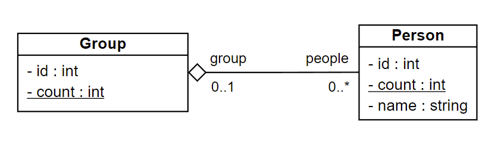
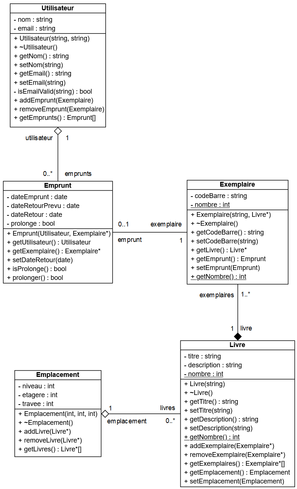

03 - POO level 2
Exercice 1
Sur la base du diagramme de classes ci-dessous, créer le programme qui permet de saisir les noms de plusieurs personnes puis un nombre de groupes à créer.

Le programme se chargera ensuite de répartir automatiquement les personnes dans les groupes.
Finalement il affichera la composition des groupes et le groupe d'appartenance de chaque personne.
Indice
Pour éviter la multiplication des objets, manipuler des pointeurs.
Indice
La classe std::vector peut être utile.
> ./exo_9.exe
Saisir les noms des personnes à créer (! pour arrêter) :
#1 : Bianca
#2 : Tryphon
#3 : Archibald
#4 : Allan
#5 : Piotr
#6 : Tchang
#7 : Seraphin
#8 : !
7 personnes saisies.
Nombre de groupes à créer : 3
1
Bianca (1)
Allan (4)
Seraphin (7)
2
Tryphon (2)
Piotr (5)
3
Archibald (3)
Tchang (6)
Bianca (1) appartient au groupe 1
Tryphon (2) appartient au groupe 2
Archibald (3) appartient au groupe 3
Allan (4) appartient au groupe 1
Piotr (5) appartient au groupe 2
Tchang (6) appartient au groupe 3
Seraphin (7) appartient au groupe 1
Correction
#include <iostream>
#include <vector>
#include <string>
using namespace std;
class Group;
class Person {
private :
int id;
static int count;
string name;
Group * group;
public :
Person(string _name) {
name = _name;
count++;
id = count;
};
~Person() {
count--;
};
int getId() {
return id;
}
string getName() {
return name;
}
string getNameAndId() {
return name + " (" + to_string(id) + ")";
}
void setGroup(Group * _group) {
group = _group;
}
Group * getGroup() {
return group;
}
};
int Person::count = 0;
class Group {
private :
int id;
static int count;
vector<Person *> people;
public :
Group(){
count++;
id = count;
};
~Group() {
count--;
};
int getId() {
return id;
}
void addPerson(Person * person) {
people.push_back(person);
};
vector<Person *> getPeople() {
return people;
}
};
int Group::count = 0;
int main() {
vector<Person *> people;
vector<Group *> groups;
int nbGroups;
vector<string> names = { "Bianca", "Tryphon", "Archibald", "Allan", "Piotr", "Tchang", "Seraphin", "Milou" };
system("chcp 65001");
system("cls");
// Création des utilisateurs (sans saisie)
for (int i = 0; i < names.size(); i++) {
people.push_back(new Person(names[i]));
}
cout << people.size() << " personnes saisies." << endl << endl;
// Création des groupes
cout << "Nombre de groupes à créer : ";
cin >> nbGroups;
for (int i = 0; i < nbGroups; i++) {
groups.push_back(new Group());
}
// Répartition des personnes
for (int i = 0; i < people.size(); i++) {
groups[i % nbGroups]->addPerson(people[i]);
people[i]->setGroup(groups[i % nbGroups]);
}
// Affichage des groupes
cout << endl;
for (int i = 0; i < nbGroups; i++) {
cout << groups[i]->getId() << endl;
vector<Person *> groupPeople = groups[i]->getPeople();
for (int j = 0; j < groupPeople.size(); j++) {
cout << groupPeople[j]->getNameAndId() << endl;
}
cout << endl;
}
// Affichage des utilisateurs
cout << endl;
for (int i = 0; i < people.size(); i++) {
cout << people[i]->getNameAndId() << " appartient au groupe " << people[i]->getGroup()->getId() << endl;
}
}
Exercice 2

Répondre aux questions suivantes portant sur le diagramme de classes, fruit du travail de conception d’un programme de gestion d’une bibliothèque.
-
Peut-on créer des utilisateurs sans spécifier de nom ? Expliquer.
Correction
-
Expliquer à quoi correspondent chacun des termes et symboles de la ligne suivante :
isEmailValid(string) : boolCorrection
-
Pourquoi la ligne
+ setEmail(string)de la classeUtilisateurn'a pas de partie avec les:?Correction
-
Peut-on valider le format d’un email avec la méthode
isEmailValiden l’appelant sur un objetUtilisateurcréé dans le programme principal ? Expliquer.Correction
-
Peut-on modifier un emprunt après création ? Expliquer.
Correction
-
Doit-on créer un objet
Empruntpar exemplaire emprunté ou un objetEmpruntpeut-il concerné plusieurs exemplaires d’un coup ? Expliquer.Correction
-
Les attributs
dateEmpruntetdateRetourPrevude la classeEmpruntn’ont pas de mutateur et le constructeur n’a pas de paramètre de type date. Qu’en déduisez-vous sur la valorisation de ces deux dates ?Correction
-
De quel type est l’attribut
empruntsde la classeUtilisateur. Proposer deux manières différentes de l’implémenter en C++.Correction
-
L’attribut
- nombre : intde la classeExemplaireest souligné, qu’est-ce que cela signifie ?Correction
-
Il n’y a pas de mutateur prévu pour l’attribut
- nombre : intde la classeExemplaire, comment peut-on incrémenter ou décrémenter cet attribut ?Correction
-
Comment peut-on, à tout moment, connaître le nombre total de documents disponibles dans la bibliothèque ?
Correction
-
Pourrait-on mettre en place sur la classe
Empruntun attribut- nombre : intavec la même caractéristique qu’à la question 9 pour compter le nombre d’emprunts d’un utilisateur ?Si oui, que doit-on mettre en place ?
Si non, expliquer pourquoi et indiquer comment réaliser cette demande.
Correction
-
En utilisant les méthodes disponibles, peut-on à partir d’un objet
Livreremonter jusqu’aux utilisateurs qui en ont emprunté un exemplaire ? Expliquer.Correction
-
Peut-on avoir des emplacements vides ? Pourquoi ?
Correction
-
Compléter la déclaration en C++ de la classe Emplacement.
On supposera que les directives #include nécessaires ont été réalisées au préalable.
Ne pas définir les méthodes.
Les tableaux d’objets
Typesont déclarés sous la forme d’un objetvector<Type>.Correction
-
Définir en C++ à l’extérieur de la déclaration de la classe
Livreles méthodes accesseur et mutateur de l’attributtitre.Correction